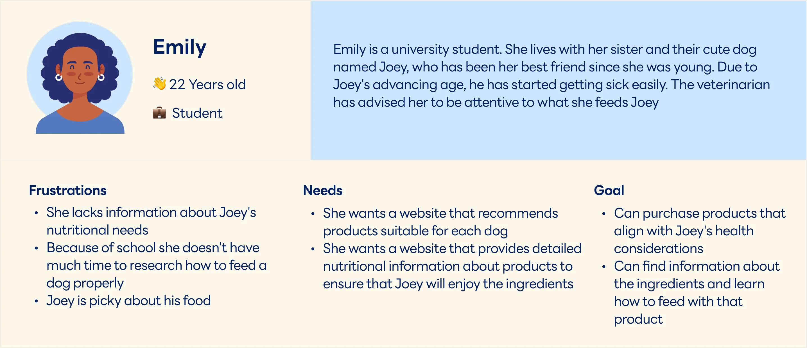
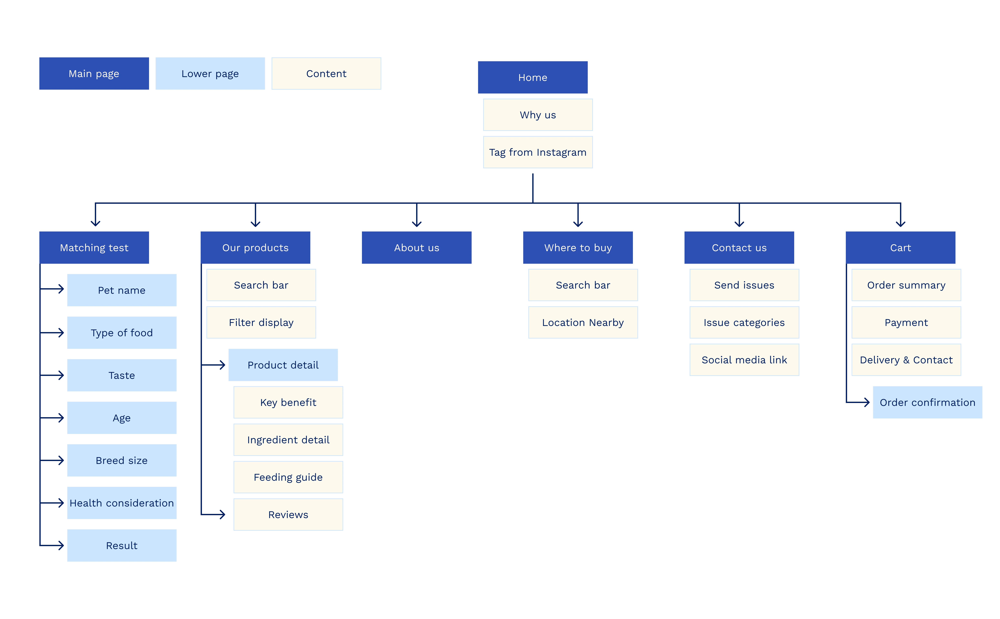
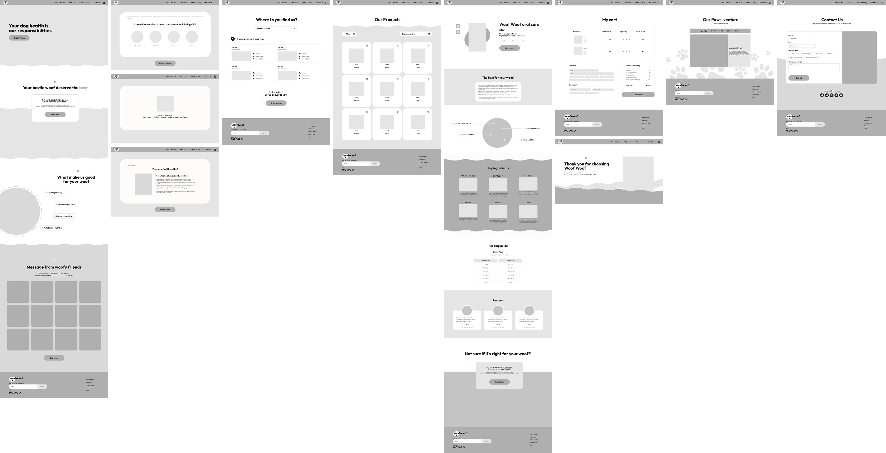

💡 Overview
Woof Woof is my personal challenge to create a business website.
My primary goals are to enhance the user experience, ensuring a smooth and delightful shopping journey free of frustration, while also maintaining a distinctive brand identity that ensures users recognize the brand through my design
With over 20 years of being a dog owner, my profound love for dogs provides unique insights into the challenges of pet care. I aim to use this passion as a focal point for research, exploring whether other pet owners share similar concerns. Hence, the creation of the "Woof Woof" brand, focusing exclusively on dog food. Through this website, I will help pet owners overcome challenges, providing guidance on selecting quality dog food and planning the best meals for their furry friends.
Role
UX/UI designer
Duration
3 Weeks
Platform
Desktop
Tools
Figma, Googleform
☄️ Problem
Before starting the design process, I conducted a survey using Google Forms to comprehend user preferences and identify areas of struggle. The survey explored challenges encountered in both online and in-store ordering of pet food. The responses were collected from 15 pet owners, aged 15 to 35, representing diverse occupations and possessing varying quantities of pets.
Finding ⤵
- Purchase Routines
:Once 1 month(Most of users prefer purchasing pet food in large quantities rather than buying it frequently) - Challenging
: Uncertainty of whether pets would enjoy the food and Lack of information regarding the nutritional needs of their pets - Prioritize
: Ingredient quality that aligns with pet's specific requirements and Price considerations
🌟 Solution
My goal is to help users in overcoming challenges when purchasing pet food by developing a website that guides them in selecting the right meal for their dog.
This involves a quick matching test, prompting users to provide simple information about their dog. The results from this test will then suggest the best meal, accompanied by detailed information on ingredients. This ensures the dogs can fully enjoy their food.
🧑💼 Persona
After understanding the problem and defining the solution, I created Emily as a persona to provide a clearer visualization of the target user and mapped out her entire journey, starting from the selection of pet food to making a payment. This process allowed me to identify opportunities for improvement


📚 Information Architecture

🚕 User flow

🖍️ Sketching & Wireframe
After completing the sitemap and user flow, I began sketching my ideas to create pages on Figjam and translated my concepts into a high-fidelity wireframe. This step allowed me to visually conceptualize the design elements and layout, ensuring a user-friendly experience and efficient navigation throughout the overall design


🛠️Design system
I chose orange and light blue as primary colors because I wanted to utilize colors that resonate with the identity of dogs. Orange conveys feelings of warmth, friendliness, and energy, which align well with the joyful and playful nature of dogs. On the other hand, light blue symbolizes trust and reliability. I believe these two colors can create a welcoming atmosphere for dog lovers when using the website

🖼️Mock up

🗝️ Key takeaway
- Designing an e-commerce website with the goal of making money requires a deep understanding of customers. It's important to learn about users' consumption behavior, the challenges they face, and their priorities when selecting products before commencing the design process
- Writing a customer journey map has truly helped identify opportunities for improvement at every stage of the user's emotional journey and find ways to prevent them from leaving the website before making a purchase
- Drawing from personal experience and passion can greatly enhance the design process. As a dog lover, I understand what other dog lovers would like to see. Realizing that if I work with a product that I use, I will confidently add elements